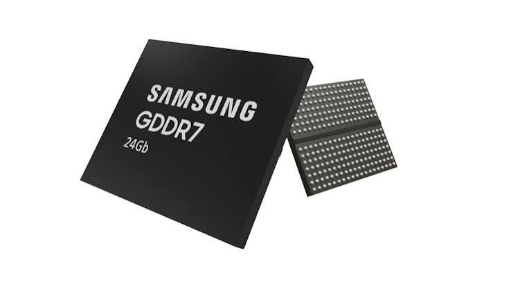
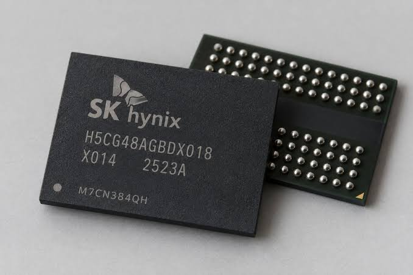

If you have been on the edge of news for pc components you already know whats happening but you should still give it a read but if you dont what Ai data centers,HBM memory and ai agents is we will explain it here.

So to start we have to recap...
What is the AI Boom?
The Ai boom started on early 2025 and was primarily driven by a massive infrastructure race among big tech companies to build data centers and to support the deployment of large language models. This period saw AI-related money spend surge to nearly $400 billion, given by a feedback loop where investment accelerated competition, which in turn pushed capabilities and adoption further. the main reason for this expansion included the Transformer architecture, which enabled efficient training on ai agents, and the public release of ChatGPT in late 2022, which served as the "browser moment" that made AI accessible to non-experts. By 2025, the market was dominated by the "Magnificent Seven" tech firms, with companies like Nvidia reaching valuations exceeding $5 trillion as they supplied the essential hardware for this global build-out.
Why is this affecting PC building?
The AI boom creates a zero-sum competition for semiconductor manufacturing capacity, as chipmakers like Samsung, SK Hynix, and Micron aggressively redirect wafer production from consumer-grade DRAM and NAND to high-margin High Bandwidth Memory (HBM) and server components. This reallocation has triggered a severe global memory shortage, causing RAM and SSD prices to surge by over 300% and forcing major motherboard manufacturers like ASUS and MSI to slash production forecasts due to record-low sales. This affects all of us.


Laptops are getting expensive, phones, smartwatches. If it has a screen its going to cost more.
ok, ok everything is more expensive because of AI.
What can we do about it?
The smartest thing you can do right now is buy the RAM and SSD you need before prices go up again — they're still climbing and there's no reason to think they'll drop soon.
Don't overspend: 32 GB of DDR5 at a normal speed (4800 to 5600) is plenty for most people, and the fancy high-speed kits don't actually make your PC feel much faster. If you already have a RAM stick or SSD from a few years ago, keep using it — that's the cheapest memory you'll ever get.
If your motherboard supports DDR4, that's still cheap, and pairing it with a Ryzen 7 5800X3D is a solid budget option. For laptops, get one where you can add RAM and storage yourself later, and look at the full price (not just the sticker price) because the cheapest model usually doesn't have enough RAM.
Refurbished or prebuilt machines can also save you money since those companies locked in parts at lower prices. And honestly, if your current setup still works, just keep using it — close stuff you don't need running in the background, move old files to an external hard drive, or do a fresh Windows install.
The shortage isn't going anywhere for a while, so there's no rush to upgrade.